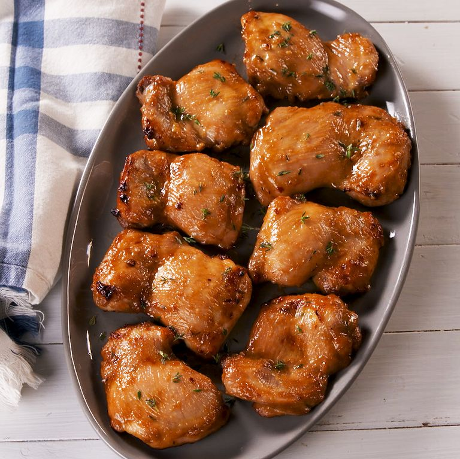

Chicken may sometimes have a terrible reputation for drying out in the oven, but we won't let that happen here. With chicken thighs you don't need to worry—even if they're skinless and boneless.
Our secret? These boneless chicken thighs first get marinated in an easy honey mustard-esque sauce that makes them so incredibly juicy and flavorful. Baking the thighs at a high temp means less time spent in the oven with even better results. These thighs are great served with a big salad or some roasted potatoes.